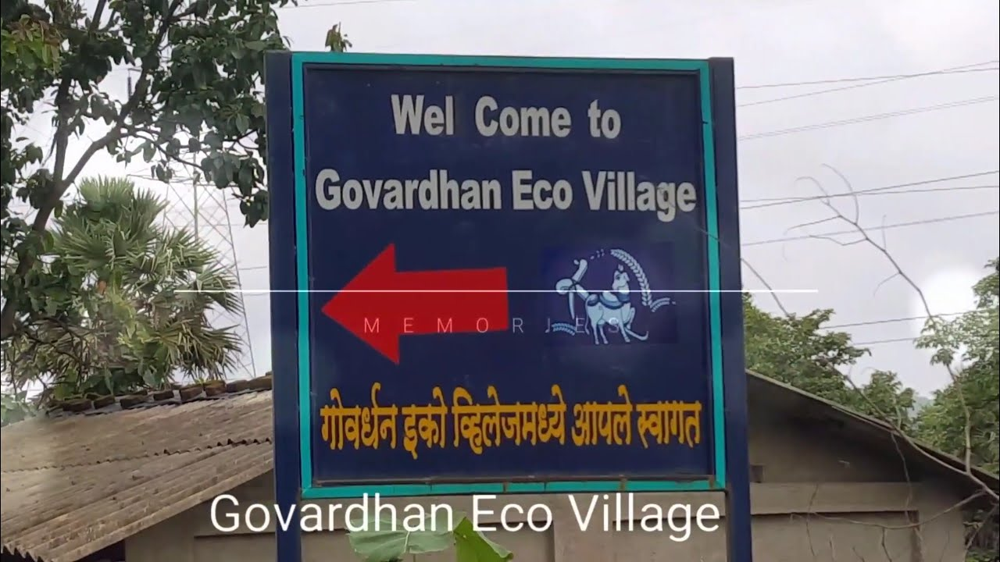

JAIPUR TRIP

So our school went to Jaipur in 2019 for a school trip .It was so much fun. We all felt safe because of the teachers who made sure that sure that we don't have any problem while the trip and we also had a lot of fun with teachers which made it a memorable trip to Jaipur.

Govardhan Ecovillage is one of the best wellness retreats in India, located a stone's throw away from Mumbai. . A place of natural harmony to release, refocus and recalibrate the self, Govardhan Ecovillage is the ideal spiritual pathway to discover the self.